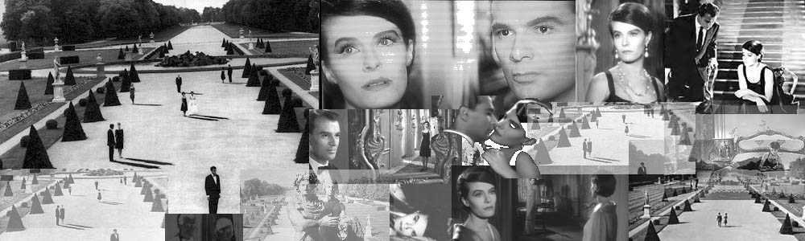

|
Interpretive Hypercubism.

Favorites.
00 L'annee derniere a Marienbad, by Alain Resnais, 1961.
01 Citizen Kane, by Orson Welles, 1942.
02 Nashville, by Robert Altman, 1975.
03 A Star Is Born, by George Cukor, 1954.
04 Hiroshima mon amour, by Alain Resnais, 1959.
05 Two for the Road, by Stanley Donen, 1967.
06 Annie Hall, by Woody Allen, 1977.
07 Dr. Strangelove, by Stanley Kubrick, 1964.
08 Vargtimmen, by Ingmar Bergman, 1968.
09 The Third Man, by Carol Reed, 1949.
10 Muriel ou le temps d'un retour, by Alain Resnais, 1963.
11 Shall We Dance, by Mark Sandrich, 1937.
Best MGM musical:
Singin' in the Rain, by Gene Kelly, 1952.
Best adapted musical:
My Fair Lady, by George Cukor, 1964.
Best foreign musical:
Les parapluies de Cherbourg, by Jacques Demy, 1964.
Best musical no one has seen:
Cover Girl, by Charles Vidor, 1944.
Best foreign musical no one has seen:
Le million, by Rene Clair, 1931.
Best humorous musical:
Sweet Charity, by Bob Fossee, 1969.
Favorite Hitchcock:
Vertigo, by Alfred Hitchcock, 1958.
Favorite Capra:
It's a Wonderful Life, by Frank Capra, 1946.
Favorite Wilder:
Sunset Boulevard, by Billy Wilder, 1950.
Favorite Lang:
Metropolis, by Fritz Lang, 1927.
Favorite Thin Man:
After the Thin Man, by W. S. Van Dyke, 1936.
Astaire & Rogers dancing:
Swing Time, by George Stevens, 1936.
Astaire & Rogers dialogue:
The Gay Divorcee, by Mark Sandrich, 1934.
Astaire & Rogers plot:
Top Hat, by Mark Sandrich, 1935.
Astaire & Rogers choreography:
Follow the Fleet, by Mark Sandrich, 1936.
Astaire & Rogers idea:
The Barkleys of Broadway, by Charles Walters, 1949.
Favorite film noir:
The Maltese Falcon, by John Huston, 1941.
Favorite science fiction:
Forbidden Planet, by Fred M. Wilcox, 1956.
Favorite horrifying horror:
The Pit and the Pendulum, by Roger Corman, 1961.
Favorite not-so-horrifying:
The Bride of Frankenstein, by James Whale, 1935.
Favorite heart warmer:
Tokyo monogatari, by Yasujiro Ozu, 1953.
Most similar to crack:
A Clockwork Orange, by Stanley Kubrick, 1971.
Most similar to LSD:
Providence, by Alain Resnais, 1977.
Most similar to barbiturates:
Chinatown, by Roman Polanski, 1974.
Most similar to MDMA:
Persona, by Ingmar Bergman, 1966
Most educational:
Mon oncle d'Amerique, by Alain Resnais, 1980.
Most ambiguous ending:
Les quatre cents coups, by Francois Truffaut, 1959.
Best rosebud imitation:
Chan Is Missing, by Wayne Wang, 1982.
Highest cholesterol:
La dolce vita, by Federico Fellini, 1960.
Most existential:
L'avventura, by Michelangelo Antonioni, 1960.
Archive.
2006 .txt Films seen by June 30.
2005 .txt Films seen by June 30.
2004 .txt Films seen by June 30.
2003 .txt Films seen by June 30.
|